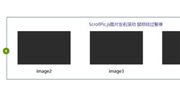

Bootstrap模板库
首页
模板
后台管理
企业网站
餐饮娱乐
创意作品集
手机移动端
非盈利组织
个人网站/博客
电子商务
即将上线/404
婚礼/婚纱摄影
医疗/健康
插件
加载和上传
提示和弹出层
图像和媒体
导航和菜单
背景和布局
时间
表单和按钮
选择和筛选
轮播和切换
评级和图表
CSS3动画
SVG动画
Canvas动画
JS小游戏
vuejs插件
手机端页面
其它
整站带后台
看看别人下载的
加入VIP
活动列表
共232个轮播和切换插件
换一批
列表切换
jquery换一批列表特效代码
轮播和切换
jquery换一批列表特效代码
全屏背景
百叶窗
全屏slider
幻灯片
js全屏背景图片slider切换过渡特效
轮播和切换
js全屏背景图片slider切换过渡特效，JavaScript全屏图片幻灯片，卷帘式百叶窗图片切换，带索引按钮控制全屏图片和文字结合幻灯片特效。
tab分类
切换介绍
分类切换
jquery tab分类切换介绍效果
轮播和切换
jquery tab分类切换介绍效果，产品介绍特效。
大图轮播
广告banner
swiper
Swiper.js电商网站大图轮播插件
轮播和切换
Swiper.js电商网站大图轮播插件，基于jquery实现的广告banner轮播效果。
广告轮播
广告banner
jquery轮播
jquery广告图片切换效果
轮播和切换
jquery广告图片切换效果，可以用在很多地方，使用箭头和圆点索引控制广告图片切换。
carousel
多图轮播
图片轮播
jquery切换
carousel.js多图轮播插件
轮播和切换
carousel.js多图轮播插件，基于jquery实现的多个图片轮播切换特效。
轮播切换
轮播插件
切换特效
jquery全屏轮播切换特效
轮播和切换
jquery全屏轮播切换特效，带视差效果的轮播插件代码。
图片轮播
整体切换
轮播图
图片组切换
jquery图片轮播整体切换特效
轮播和切换
jquery图片轮播整体切换特效，一款很有特色的轮播图插件，点击左右箭头4张图片同时切换到下一组。
新闻分类
新闻列表
tabs
切换
jquery新闻分类tabs切换特效
轮播和切换
jquery新闻分类tabs切换特效，新闻网站常见的分类效果新闻列表。
superslide
新闻公告
切换新闻
jquery.SuperSlide新闻公告轮播特效
轮播和切换
jquery.SuperSlide新闻公告轮播特效，左右箭头切换新闻的特效。
人物介绍
tabs切换
切换介绍
jquery游戏人物tabs切换介绍
轮播和切换
jquery游戏人物tabs切换介绍，适合游戏网站，人物介绍切换特效。
产品tabs
信息轮播
卡片轮播
superslide
SuperSlide.js产品信息tabs切换
轮播和切换
SuperSlide.js产品信息tabs切换，jquery实现卡片信息轮播特效代码。
app介绍
功能介绍
jquery介绍app功能切换特效
轮播和切换
jquery介绍app功能切换特效，不错的手机app介绍页面特效代码下载。
圆点轮播
箭头轮播
切换特效
tweenmax
TweenMax简约轮播切换特效
轮播和切换
一款简约的轮播切换特效，基于TweenMax.js实现的箭头和圆点轮播。
手风琴
图片切换
banner轮播
jquery图片水平手风琴切换特效
轮播和切换
jquery图片水平手风琴切换特效，带标签的平滑手风琴自动轮播切换效果。适用于网站主图banner展示布局代码。
产品slider
slider切换
广告轮播
轮播特效
jquery特效
产品slider三栏切换jquery特效
轮播和切换
产品slider三栏切换jquery特效，常见的广告轮播特效代码。

无缝滚动
图片滚动
js滚动
jquery图片水平无缝滚动插件
轮播和切换
jquery图片水平无缝滚动插件，可以自定义图片个数和方向，默认是从右向左的图片滚动轮播插件。
banner轮播
轮播图
轮播插件
js轮播
响应式轮播
jquery响应式banner轮播图插件
轮播和切换
jquery响应式banner轮播图插件，带视差效果的js轮播特效代码。
1
2
3
4
5
6
7
8
... 12
标签查找
|
关于我们
|
格式化工具
|
bootstrapmb.com 版权所有
苏ICP备17077179号-2